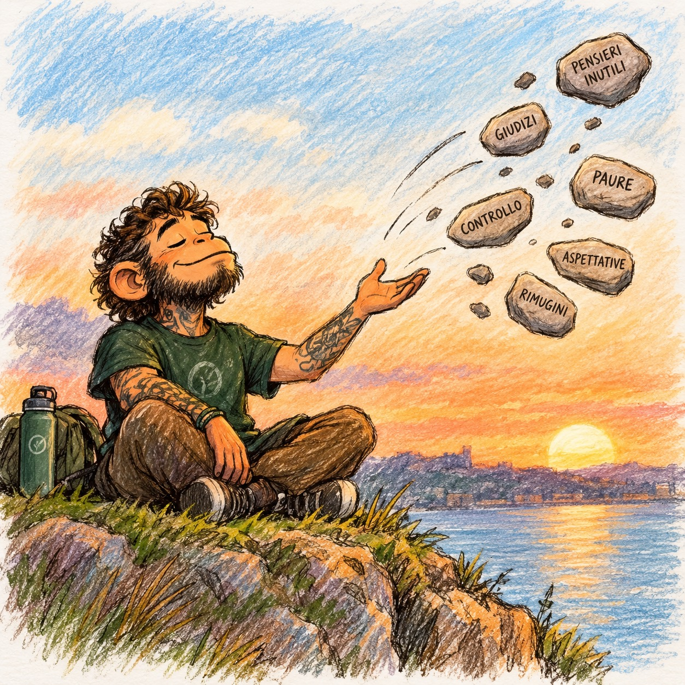

Ci sono momenti nella vita in cui chiudere una pagina della nostra storia personale sembra quasi un fallimento.
Pensiamo a tutto il tempo investito, alle energie spese, ai progetti costruiti e alle aspettative che avevamo nutrito. E allora ci diciamo:
“Non posso mollare. Ci ho investito così tanto.”
Ma siamo davvero sicuri che continuare sia sempre la scelta giusta?
Il valore di ciò che abbiamo vissuto
In mindfulness, lasciare andare non significa essere deboli, pigri o arrendersi alle prime difficoltà. Non significa smettere di lottare per ciò che desideriamo o evitare ogni ostacolo.
Significa, piuttosto, imparare a osservare con lucidità ciò che sta accadendo.
A volte una difficoltà merita perseveranza. Altre volte, invece, ci troviamo dentro situazioni che continuano a sottrarci energia, tempo e presenza, senza permetterci più di esprimere il meglio di noi.
Può accadere con un hobby, con una relazione, con un progetto personale o persino con un obbligo lavorativo.
Il problema non è necessariamente ciò che stiamo facendo. Il problema può essere il modo in cui lo stiamo vivendo.
Quando non siamo più noi a governare la barca
Penso a una mia esperienza personale: il mio profilo da gamer.
Dopo sei anni di lavoro, oggi ho deciso di chiudere quella pagina. Ma quei sei anni sono stati buttati?
No.
Mi hanno lasciato competenze, esperienze, relazioni, idee e una parte importante della mia storia. Non devo cancellarli soltanto perché oggi scelgo di non alimentare più quel progetto.
A un certo punto, però, mi sono fermato a osservare ciò che stava succedendo.
Mi sono reso conto che pretendevo troppo da me. I ritmi dettati dai social erano diventati insostenibili.
Dovevo fare clip, condividere opinioni, rispondere ai commenti, pubblicare, essere presente, non sparire.
E lentamente ho iniziato a percepire che non ero più io a governare la barca.
A guidarmi era una sorta di “me” invisibile, costruito dalle aspettative dei social, dagli algoritmi e dalla paura di perdere visibilità.
“Devi fare un’altra clip.
Devi pubblicare qualcosa.
Devi rispondere a quel commento.
Devi esserci, altrimenti scompari.”
Ma per cosa?
Per un pugno di like?
Il costo dell’attaccamento
Il punto non è che il gaming fosse sbagliato. Il punto è che, a un certo momento, quel progetto aveva iniziato a chiedermi più di quanto fossi disposto — e in grado — di dare.
E qui entra in gioco una delle domande più importanti che possiamo porci:
“Sto ancora facendo questa cosa perché mi nutre, oppure perché ho paura di smettere?”
A volte restiamo ancorati a qualcosa non perché ci faccia ancora bene, ma perché abbiamo paura che tutto il tempo investito perda valore.
Eppure il tempo passato non viene recuperato continuando a spendere altro tempo.
I sei anni che ho dedicato al mio profilo da gamer non diventano inutili perché oggi scelgo di fermarmi.
Al contrario, acquistano un significato nuovo: mi hanno condotto fino alla consapevolezza di ciò che oggi non voglio più sostenere.
Lasciare andare è una scelta consapevole
La mindfulness ci invita a osservare l’attaccamento, la paura, il senso di colpa e il bisogno di dare un significato a ciò che abbiamo vissuto.
Non ci chiede di abbandonare tutto alla prima difficoltà. Ci invita a distinguere tra la perseveranza autentica e l’accanimento.
Perseverare significa continuare a camminare verso qualcosa che sentiamo ancora nostro.
Accanirsi, invece, può significare restare fermi nello stesso punto soltanto perché abbiamo paura di ammettere che qualcosa è cambiato.
Chiudere una pagina non significa dire che quella pagina non contava.
Significa riconoscere che ha avuto un valore, ma che non siamo obbligati a sacrificare altri anni per dimostrarlo.
Forse questa è una delle forme più concrete di mindfulness: non abbandonare la vita, ma smettere di alimentare ciò che ci allontana da noi stessi.
E, finalmente, riprendere il timone.